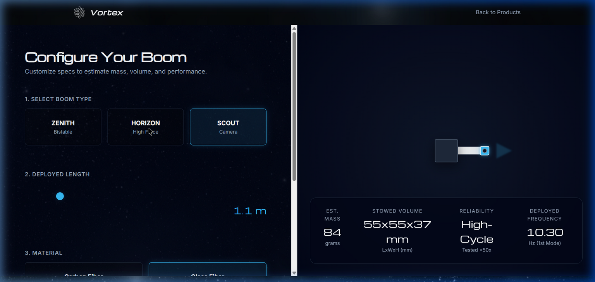
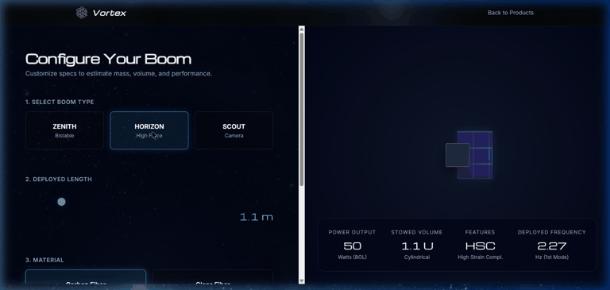

BOOM Configurator
The BOOM Configurator is an interactive, web-based design tool built for aerospace engineers and payload designers to customize and simulate the performance of deployable booms.
Deployable boom structures are critical components in modern satellite designs, enabling everything from massive roll-out solar arrays to extended sensor platforms. This configurator provides real-time data on mass, stowed volume, and structural integrity, allowing designers to make immediate trade-off analyses without launching a complex CAD or FEA simulation.
Interface


Key Features
- Versatile Boom Types: Choose from ZENITH (Bistable) for general-purpose applications, HORIZON (High Force) for power-focused deployment (e.g., solar arrays), or SCOUT (Camera) for imaging sensor support.
- Dynamic Scaling: A precision slider allows adjusting the deployed length from 0.5m to 5.0m, directly impacting the estimated mass, volume, and structural capability.
- Material Trade-offs: Compare the performance of Carbon Fiber (high-stiffness, superior natural frequency) against Glass Fiber (flexible, lower natural frequency).
- Live Metric Calculation: Receive instant feedback on expected metrics such as 1st Mode Natural Frequency (Hz), Stowed Volume (LxWxH or CubeSat U-units), and Reliability constraints.
Whether you are an enthusiast exploring space systems or an engineer drafting preliminary architectures, the BOOM Configurator streamlines your hardware selection process by bringing actionable performance estimates into an accessible, reactive interface.